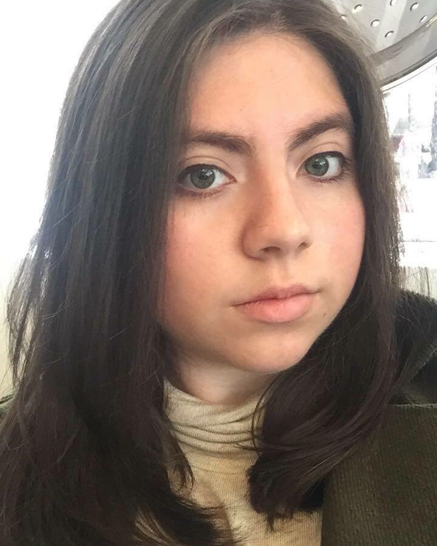

Sandra Karina Bustamante
A traditional and computer-based animator residing in Boston.
Skilled in:
- Animation
- Drawing
- Motion Graphics
- Photography
Currently studies Visual Media Arts production at Emerson College. Social justice issues are important to her work. Her goal is to teach kids important lessons while giving them worlds full of imagination.
She is passionate about highlighting the diverse stories of marginalized groups and the struggles they face. Art projects focus on women, people of color, LGBT members, mental illness, disabilities, and poverty.
Born in Puebla, Mexico and growing up in Los Angeles, California her journey began at childhood watching animated shows or films by artists. Doodling in notebooks since then, she aspires to make works for younger audiences. Spends her free time reading comics, playing video games or hangin out with her pet monkey.
Previously featured artwork with cultural organizations at Emerson College like Flawless Brown or Amigos. She has worked on collaboration between Emerson and Armani. Feel free to contact her for your ideas or needs.
Check out her Youtube page here
Sandra's Channel 